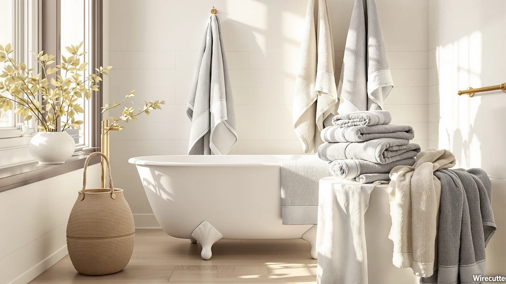

Best Luxury Bath Towels with Hanging Loops (2026)
Prices and picks verified as of September 2026. Independent, reader-supported reviews.


Quick Answer
The Luxury White Bath Towel Set from White Classic is the best luxury bath towel with a hanging loop for most bathrooms, pairing an 8-piece ring-spun cotton set with a corner loop on every towel for $39.99. If you want fewer, larger towels instead of a full set, the American Soft Linen Luxury 4 covers the same cotton quality in an oversized 27x54 inch format.
Our pick: Luxury White Bath Towel Set — $39.99 Check Price on Amazon
Bottom line: our top pick is the Luxury White Bath Towel Set of 8 Pieces - 100% Turkish Cotton at $39.99. The best budget option is the Utopia Towels 8 Piece Luxury Towel Set at $29.99.
Things to Know Before You Buy
- Material splits the field. Six of the seven sets we compared are 100% cotton, and one, the NALIVO, is microfiber. Cotton gives you the dense, absorbent feel most people want from a luxury towel, while microfiber dries faster on the hook.
- Set size varies more than price does. Prices in this roundup run from $32.99 to $55.98, but that range does not track directly with how many pieces you get. Some 6-piece sets cost about the same as 8-piece sets, so check what is actually included before you compare per-towel cost.
- The hanging loop is a corner-sewn detail, not a hook. Every towel here has a fabric loop stitched into one corner so it can hang from a hook or bar. It keeps a towel off a damp countertop and helps it dry between uses, but you still need a hook or bar to use it.
- Bigger sets usually mean smaller pieces are included too. An 8-piece set typically bundles bath towels with hand towels and washcloths, while a 4-piece or 6-piece set may be bath towels only. Match the count to what you actually need replaced.
- White shows wear differently than patterned towels. Two of our picks are plain white. They look crisp out of the package but will show staining and yellowing sooner than the striped or colored alternatives if you do not wash them separately.
The best luxury bath towels with hanging loops combine a dense, absorbent weave with one small design detail: a fabric loop sewn into a corner so the towel hangs neatly from a hook or bar instead of piling on a rack or the floor. That loop sounds minor until you are trying to keep four or five towels organized in a shared bathroom, and it is a feature that shows up far more often on higher-end cotton sets than on basic ones.
We compared seven current towel sets ranging from $32.99 to $55.98, looking at fabric composition, how many pieces come in each set, and what verified buyers report about softness, absorbency, and durability after repeated washing. Six sets use 100% cotton in weights and set counts ranging from a compact 6-piece bundle to a full 8-piece assortment, and one uses microfiber for buyers who care more about quick drying than a plush cotton hand.
Our verdict: for most bathrooms, the Luxury White Bath Towel Set from White Classic is the strongest of the best luxury bath towels with hanging loops we compared, an 8-piece cotton set with a hanging loop on every towel at a mid-range $39.99. Shoppers who want oversized bath towels without extra washcloths should look at the American Soft Linen Luxury 4, and anyone working with a tighter budget will find the Utopia Towels 8 Piece Luxury set covers the same 8-piece format for less money.
Why You Should Trust Us
Best Bath Towels is a research-based review site. Ilane Tall, our home and bath expert, leads our coverage of bath textiles, and our picks come from comparing manufacturer specs, current Amazon pricing, and verified owner reviews rather than a physical testing lab. We do not run a fake testing lab or claim hands-on time we did not spend. When we recommend the best luxury bath towels with hanging loops, it is because the material, set size, and review pattern for that product held up against the alternatives, not because we owned every set on this list.
How We Picked
We started from the current lineup of luxury bath towel sets sold on Amazon that include a corner hanging loop, then narrowed the field to products with a clear material listing, a stated set size, and enough verified reviews to judge consistency. We prioritized 100% cotton construction, since that is what most shoppers expect from a luxury set, while keeping one microfiber option for readers who want faster drying. Price mattered too: every pick in this best luxury bath towels with hanging loops roundup sits between $32.99 and $55.98, a range wide enough to cover a value pick and a premium pick without drifting into products that are luxury in name only.
How We Compared
We researched each set side by side on material, published set size, price per piece, and what owners report after washing and everyday use. By most reviewer accounts, the cotton on American Soft Linen and White Classic sets keeps its softness through multiple wash cycles, while feedback on thinner budget sets more often mentions the pile flattening sooner. We also compared how each brand describes the hanging loop itself, since a loop that is reinforced at the seam holds up differently than one that is simply folded fabric, according to owner photos and comments on the more detailed listings. Prices reflect the values published in this article and are current as of publication.
Our Picks

Luxury White Bath Towel Set
What we like
- 8-piece set covers bath towels, hand towels, and washcloths in one purchase
- Ring-spun cotton that owners describe as soft even after repeated washing
- A hanging loop on every piece, including the hand towels and washcloths
- Classic white finish that matches most bathroom colors
Flaws but not dealbreakers
- Plain white shows staining and yellowing sooner than a patterned set
- Some owners recommend a separate cold wash for the first few cycles to limit lint
| Material | 100% cotton |
| Size | 8 Pieces Towel Set |
The Luxury White Bath Towel Set is the most complete option in this comparison, bundling bath towels, hand towels, and washcloths into one 8-piece purchase for $39.99. That works out to less per piece than several sets here that only include bath towels, which is part of why it holds up as the strongest all-around pick for a shared or guest bathroom where you need more than one size of towel.
White Classic builds this set from 100% cotton, and reviewers describe the feel as soft and absorbent rather than scratchy, a distinction that matters since not every set marketed as luxury actually uses a dense cotton weave. Every towel includes the corner hanging loop that defines this whole category, so you are not stuck deciding which pieces get hung and which get folded. The main tradeoff is the finish: plain white looks crisp fresh out of the package, but it will show water spots, product buildup, and general staining faster than the striped set later in this list, so plan on washing it separately from colored laundry.

American Soft Linen Luxury 6
What we like
- 100% cotton construction that reviewers describe as thick and absorbent
- Corner hanging loop sized to hold the towel's weight without tearing
- American Soft Linen has a consistent reputation across its towel lineup
Flaws but not dealbreakers
- 6-piece count skips washcloths that some 8-piece competitors include
- A few owners report the loop stitching loosening after many wash cycles
| Material | 100% cotton |
| Size | 6 Pc Towel Set |
American Soft Linen's Luxury 6 set matches the top pick on price at $39.99 but trims the count to six pieces, which usually means bath towels and hand towels without the washcloths bundled into the 8-piece White Classic set. That makes it a reasonable choice if you already own washcloths and need to replace worn bath and hand towels.
The cotton comes across as dense in most reviews, and owners say it holds up to repeated washing better than budget alternatives, which tracks with American Soft Linen's positioning as a mid-to-upper tier brand on Amazon. The corner hanging loop is present on every towel, though a handful of verified reviews mention the loop stitching loosening after months of daily use, a wear pattern worth watching if you hang towels on a hook rather than a bar.

Utopia Towels 8 Piece Luxury
What we like
- Lowest price per towel of any set in this roundup
- Full 8-piece set including washcloths and hand towels
- Ring-spun cotton that verified buyers describe as soft for the price
Flaws but not dealbreakers
- Thinner pile than the pricier American Soft Linen and White Classic sets
- A few reviewers note the hanging loop stitching feels less reinforced than on higher-priced sets
| Material | 100% cotton |
| Size | 8 Pieces Towel Set |
Utopia Towels undercuts every other set here at $32.99 while still delivering the full 8-piece format, which makes this the clear budget pick if you need to outfit an entire bathroom without spending close to $40 or $50. The set includes bath towels, hand towels, and washcloths, each with the corner hanging loop that defines this list.
You do give something up for the lower price. Owners comparing this set against pricier cotton towels generally describe the pile as thinner, and a handful of reviews mention the loop stitching feeling less reinforced than on the American Soft Linen or White Classic sets. For everyday use in a guest bathroom or a college apartment, that tradeoff is easy to accept given the savings, but if softness is your top priority, one of the pricier picks above will hold up better over time.

American Soft Linen Luxury 4
What we like
- 27x54 inch sizing gives more coverage than a standard bath towel
- 100% cotton construction from a brand reviewers trust for consistency
- Corner hanging loop sized for the towel's heavier weight
Flaws but not dealbreakers
- No hand towels or washcloths included, unlike the 8-piece sets above
- Priced close to the 6-piece American Soft Linen set for fewer total pieces
| Material | 100% cotton |
| Size | 27x54" Bath Towel Set |
This American Soft Linen set skips the hand towels and washcloths entirely and focuses on oversized 27x54 inch bath towels, at $39.95. If your current bath towels feel too small to wrap around comfortably, sizing up is often a bigger comfort upgrade than switching brands, and this set gives you that extra coverage in the same 100% cotton construction as the brand's 6-piece set above.
The corner hanging loop here is scaled to the towel's heavier weight, which matters more than it sounds since an oversized towel puts more strain on a loop than a standard one does. The obvious drawback is scope: at nearly the same price as the 6-piece Luxury 6 set, you get four bath towels only, so this pick makes the most sense for buyers who already have hand towels and washcloths they like and want to upgrade the bath towels themselves.

NALIVO Extra Large Bath Towel
What we like
- Microfiber construction that owners report dries noticeably faster than cotton
- Extra-large sizing for full-body coverage
- Corner hanging loop included on every towel in the 6-piece set
Flaws but not dealbreakers
- Highest price in this comparison at $55.98
- Microfiber lacks the dense, plush hand that cotton loyalists expect from a luxury towel
| Material | Microfiber |
| Size | 6Piece Towel Set |
NALIVO is the outlier in this roundup on two counts: it is the only microfiber set, and at $55.98 it is also the most expensive. Owners say the microfiber dries faster than the cotton sets on this list, a real advantage in a bathroom with poor ventilation or for a household doing frequent towel changes.
The tradeoff is texture. Microfiber does not replicate the dense, absorbent hand of a heavier cotton weave, so buyers coming from a plush cotton towel sometimes describe the switch as an adjustment rather than a straightforward upgrade. If quick drying and extra-large sizing matter more to you than a traditional cotton feel, this is the pick in the lineup built around that priority. If cotton softness is non-negotiable, one of the six cotton sets above is the better fit.

White Classic Luxury Bath Towel
What we like
- Same 8-piece format and 100% cotton construction as our top pick
- Corner hanging loop on every towel
- Consistent reviews from a brand already represented at the top of this list
Flaws but not dealbreakers
- Very close to the Luxury White Bath Towel Set above in price, material, and set size
- Not enough differentiation to choose over the top pick unless you specifically want a second set
| Material | 100% cotton |
| Size | 8 Pieces Towel Set |
White Classic shows up twice in this roundup, and this second listing matches the brand's top pick almost exactly: 8 pieces, 100% cotton, a hanging loop on every towel, and the same $39.99 price. If you already own and like the brand's other set, this is a straightforward way to add matching towels without introducing a new material or weave into your bathroom.
Because it overlaps so closely with the Luxury White Bath Towel Set above, we would not recommend picking this one first. It earns a spot on the list mainly as a restock or expansion option for existing White Classic owners, not as a distinct alternative with its own tradeoffs. If you are choosing your first set, start with the top pick instead.

Premium Staple Cotton Bathroom Towel
What we like
- Single-stripe design breaks up the plain white look shared by other picks
- 100% cotton construction at a mid-range price
- Corner hanging loop included on every towel
Flaws but not dealbreakers
- 6-piece set is smaller than the top pick's 8-piece assortment
- Fewer color and pattern options than a plain white set if the stripe is not your style
| Material | 100% cotton |
| Size | 6 Pieces – 1 Stripe |
One Thousand Reasons is the only brand on this list making a real style statement, with a single stripe running through an otherwise 100% cotton towel set for $37.99. If every other pick here reads as plain hotel white to you, this is the option that adds some visual interest without leaving cotton behind.
It comes in a 6-piece format rather than the 8-piece count of the top picks, so you are trading some quantity for the design detail. The corner hanging loop is present throughout, and the cotton construction keeps it in line with the softness and absorbency of the other cotton sets in this roundup, in a smaller bundle with a more decorative finish.
Quick Comparison
| Product | Material | Price | Rating | Best for | Get it |
|---|---|---|---|---|---|
| Luxury White Bath Towel Set | 100% cotton | $39.99 | 4 | Best overall | View on Amazon → |
| American Soft Linen Luxury 6 | 100% cotton | $39.99 | 4 | Smaller 6-piece cotton set | View on Amazon → |
| Utopia Towels 8 Piece Luxury | 100% cotton | $32.99 | 4 | Best budget pick | View on Amazon → |
| American Soft Linen Luxury 4 | 100% cotton | $39.95 | 4 | Oversized bath towels only | View on Amazon → |
| NALIVO Extra Large Bath Towel | Microfiber | $55.98 | 4 | Fastest drying, extra-large | View on Amazon → |
| White Classic Luxury Bath Towel | 100% cotton | $39.99 | 4 | Second matching cotton set | View on Amazon → |
| Premium Staple Cotton Bathroom Towel | 100% cotton | $37.99 | 4 | Decorative striped design | View on Amazon → |
What makes a bath towel feel luxurious instead of heavy?
Weight alone does not make a towel feel luxurious.
Do all luxury bath towels come with a hanging loop?
No.
The Competition
We also looked at heavier Turkish cotton sets in the 700 GSM range while researching the best luxury bath towels with hanging loops, but several of the ones we checked either left the hanging loop off entirely or bundled it only on the hand towels, not the full-size bath towels. That inconsistency ruled them out for a list built specifically around the loop feature.
We also considered a few bamboo-cotton blend sets that market themselves as eco-friendly luxury options. Owner feedback on those was mixed on durability, with more reports of pilling after a few months than we saw on the straightforward cotton sets included here, so we left them out in favor of picks with a more consistent review pattern.